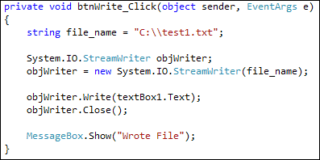
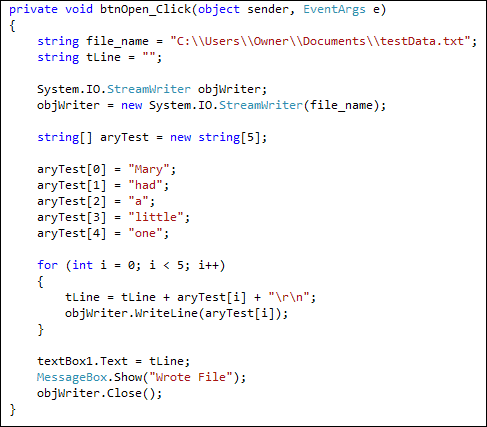

Write to a Text File in C# .NET
To write to a text file, you use the StreamWriter instead of the StreamReader. It's used in the same way, though:
System.IO.StreamWriter objWriter;
objWriter = new System.IO.StreamWriter( file_name );
Here, we're setting up a StreamWriter object and calling it objWriter. When you create a new StreamWriter object, you hand it the name of a file between the round brackets. Note that if the file is not found, no error will be raised. This is because a file is created if one doesn't exist.
Add another button to your form. Double click and type the following code for it (If you have a Windows version later than XP you can add the longer file_name lines, the ones with Environment.GetFolderPath, etc, from the previous section):

Notice the line the does the writing:
objWriter.Write( textBox1.Text );
After the dot, use the Write method. In between the round brackets of Write, add what it is you want to write to your file. For us, this was the Text in textBox1.
We also close the StreamWriter object, after we have finished with it.
If you want to write line by line, instead of all at once, use this:
objWriter.WriteLine( );
In between the round brackets of WriteLine, you add the line that you want to write to your text file. This is normally done in a loop, and is useful if you have an array of text that you want to write to a file. Here's a coding example that does just that. See if you can work out what's happening. Try it yourself.

The for loop is where we write each line to the text file, adding a carriage return and new line character.
Appending text to a file
When you use either Write or WriteLine, it will overwrite the current file. So if you click your button twice, it won't add the new text to the end. It will just erase whatever is already there, and write it again.
If you want to add more text to what you already have, then you need to append. This is quite easy, and is done with the StreamWriter line:
objWriter = new System.IO.StreamWriter( file_name, true );
Between the round brackets of StreamWriter, and after the file you want to use, you type true to append data to your file. The default is false.
And that's it - no need for anything else!
Coming up next - How to Copy a file with C#.